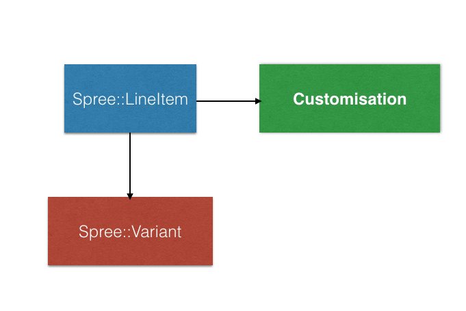

class: center, middle ## Global shipping of _on-demand_ products in **Solidus** ??? Introduction: I'm Alex, backend developer at Lostmy.name, where I have been working for the past _almost_ 3 years. _short pause_ Today I'll be going through some of the fun, and experimentation, we had with Solidus trying to set it up for our particular use case: **delivering magical, personalised products to our customers all around the globe.** _pause_ NEED TO EXPLAIN A BIT MORE OF WHAT THIS IS GONNA BE. how to personalize products and ship the globally show the Q4 books. cut out some of the bad part -- focus on the right part. moving the lessons to the beginning STARTED ON SPREE ----> MOVED TO SOLIDUS started 2015 - had nothing 2015 sep moved to spree - 2016 UPSTREAM XXX 2017 - enabled -------- MENTION THAT customisable === QUANTITY 1 customisable = not the color; arbitrary text - customisation can't be solved by variants. --- class: center, middle <img src="img/logo.svg" width="400px"> </img> <br> <img src="img/solidus.png"> </img> ??? I have worked with (Spree) ... Solidus for the same amount of time as I have been at Lostmy.name. We have some unique requirements and we are constantly pushing Solidus to do more things! --- class: center, middle <img src="img/products.jpg" width="100%"> </img> ??? By now, I'm sure you guys are aware what we do at Lostmy.name: these beautiful print-on-demand personalised products. To help us sell these products our website is powered by Solidus on the backend and ReactJS frontend. But let me take you guys baaaack to the start... 3 years ago; when we didn't know **most** of the things that we know today, mainly we didn't know that there is a "Spree-way" of doing things! --- class: center, middle <img src="img/algo.jpg" width="600px"> </img> ??? When we started we were 3 engineers and neither of us had very much e-commerce experience, so having a base project (with _some_ guildelines) made a massive difference. Nonetheless, we still felt like everyday we were creating _bespoke algorithms_. _The tshirts are a running joke of when our CEO was on TV and was asked how our books are created and said that: "we have a bespoke algorithm"._ So, what was our website before solidus? It that had very basic concepts of ecommerce: `Order` `Book` `Payment`. Then we moved to solidus. Basically looked like this. Switch slides now. --- class: center, middle </img> ??? It can go places, but it's pretty damn slow, not very weather proof, and you can't make a lot of enhacements. So we went to solidus. --- class: center, middle <img src="img/cockpit.jpg" width="600px"> </img> ??? Going from that... to this ........ it was quite a change. Now... I'm not joking. Solidus does really feel like this ... ## See the ERD --- class: center <img src="img/erd.png" height="500px"> </img> ??? We went from a simple website to a very intricate, feature-rich e-commerce engine. We had **no idea** what we subscribed to!! We obviously wanted a system that would scale, but going from 4 models to two dozen was a **very** big chance. We were not ready to start thinking about `line items` `inventory units` `shipping rates` `stock items`. We wanted to sell **personalised** childrens books. Sure, it shouldn't have to be that hard?? --- class: center, middle ### _Personalized_ content ??? We started at our basic need - to be able to have customisable products, and sell them. We thought - "OK, this is a big project; someone probably done this before, right?" So we started to look for _solidus_ extensions that would allow us to customise a product. _ I have to say at this point we still didn't fully understand what **product options** and **variants** fully were, and how to use them._ --- class: center, middle ### OK - We have to write our own ??? After a few days of looking around and tying a few extenions, we decided, that _unfortunately_, we have to write our own **product customisation** code. --- class: center, middle ### Sure, no problem ??? We sort of know what we have to do... or so we thought. --- class: center, middle ### But what do we actually write? ??? Ok - it's a new model! Great!! But where does it fit in the puzzle? What values will it contain? _Important to specify that at this point we only had an `enGB` softback book available for boy/girl. We knew we gonna do a hardback book and more languages; as well as other products but not a lot more than that._ We still had a lot of questions and **doubts** about how to really model this new thing. --- class: center, middle ### We really need to understand what these variants are ??? How many of you are familiar with the product, product options, option values; and variants? Well, worry not, I will try to clarify it. --- class: center, middle ### Product & Product Option Types </img> --- class: center, middle ### Variant & Option Values </img> --- class: center, middle ### Our use-case <img src="img/lmn-prod-types.png"> </img> ??? So we create a new product **Lostmy.name book**. The product has the product options of `gender` and `locale`. At this point we don't have a product option for the `cover_type` (softback vs hardback) - because we were not that forward thinking _ loads of regrets about this_. Now what should the variants be? #### Anyone want to guess? --- class: center, middle ### `lmn:softback:boy:en-GB` ### `lmn:softback:girl:en-GB`. ??? Notice how we added _softback_ in there, although we don't actually model that in the product option? ... Yep - that was problematic. --- class: center, middle ### `Customisation` REMOVE SPREE FROM CUSTOMISATION  </img> ??? So we have variants, and line items. Line items felt like the right place for attaching the customisation. They are created when someone adds something to the cart, so it's perfect. _ We also evaluated attaching the customisation to `InventoryUnit` - but those generated and regenerated at basically every step of the checkout stage._ --- class: center, middle ### Reminder: We were on Spree 2.0 ??? Yep. Things are a lot better in terms of how objects are generated and used today compared to back then. (about 3 years ago!); and things are improving everyday!! which means that any newcomer won't have to struggle with some of the things we had to. At this point, we had a place to store our customisation options, ie: name, dedication. --- class: center, middle ### Model - ✅ ### Controller - ✅ ### Other decorators - 🎄 ??? At this point: - we have a model - we have a link to an existing Spree model We need to create a new route, put together a controller and a view to add a new Lostmy.name book to the cart. --- class: center, middle ### Book in cart! ??? We got to this point - it felt great; but also very overwhelming. We were using Spree, but we had **a lot**, and I mean **A LOT** of decorators. Now that we have something in the cart, surely, it should be easy to checkout, as we didn't change any of that logic? ... right? right? From the cart - we only had to tweak the generation of inventory units - as our items were unique to properties that were not determined by the variant. Lets not talk too much about this now - as it's a whole other list of surprises. Now enter the 2nd complication of our business: multiple stock locations (global shipping) as well as `on demand` products. --- class: center, middle ### Stock (Inventory) ??? We operate an on-demand business, but we still have some _stock_ on the premises of our stock locations. When we launched with 1 book it was an easy problem to solve. But now we have over 90 variants, that have different availabilities throughout the world. As we are adding more products we have to start to **really** manange the inventory in solidus. Thankfully, here we were able to use the solution from Spree, which is the StockItems table and view. It looks like this now. --- class: center, middle <img src="img/admin-stock.png"> </img> ??? although we **still** don't know why we have negative counts; we have a few ideas but we are not 100%. can't say we spent too much time trying to fix/or change it as this is something that _just works_. Imagine that we have 90 variants(spread across 5?? 6?? products) x 10 stock locations = ~900 entries in the StockItems table. --- class: center, middle ### Stock Locations ??? Again, we were able to use this concept from Solidus. We added some additional fields to be able to cope with our shop's specific requests such as: daily capacity, working days, holiday calendar, etc. --- class: center, middle ### Shipping Methods ??? Here we had to tweak a lot. Originally, in _Spree 2.0_ the shipping method has no connection to the stock location; but only a connection to the zone (the destination); meaning if you had more methods shipping to the same zone, it was impossible to distinguish them. --- class:center, middle ### Shipping Methods, Zones </img> ??? Meaning it looked like this. For a business like LMN, who was shipping from the UK to the US, and also from US to US; this was creating problems. It's important to say here that we also added some custom fields to the `ShippingMethodZone` table to hold information such as shipping duration for that shipping method to that zone. Initially we worked around this limitation; by modelling around this limitation. But as the business requirements changed, and we had to start creating some magic. Soon afterwards, we onboarded a new `stock location` and our house of cards collapsed; and again we had to write _bespoke algorithms_. It all started with commits like this. --- class: center, middle <img src="img/commits.png" width="1000px"> </img> ??? dark days. --- class: center, middle </img> ??? Then we introduced the relationship between stock-location and shipping method, this enabling us to have a full chain of SOURCE----DESTINATION modeled. This change is upstreamed into Solidus, but I'm not sure how many people are aware of it - and how many use it; but it was something that definitely help us. --- class: center, middle ### Data model ✅ ??? At this point, we thought we had a good data model for this shipping side of things. Now back to the cart!! We were now looking to actually order a `book`. Sounds easy right? --- class: center, middle </img> ??? It should be just putting books in a box, then adding a shipping label. O'boy. Lets start at the basics - creating a shipment. --- class: center, middle ### Coordinator #### Builder #### Priotizer #### Estimator #### Validator ??? Again - here we tried to ue the default objects and flow from Solidus. These are the default components that ship with `Spree`. There are some changes in how these components behave that have happened since we started using Spree and the current version of Solidus, but mainly their responsabilities stayed the same. **Builder** - builds **all** possible packages (one for each stock location with the available stock items). **Prioritizer** - (the only place where you can customise) - sorts the packages based on a rule (customisable), then balances(adjusts) the packages - so you are left only with the minimal subset of packages that added together == order contents **Estimator** - creates the shipping rates for the packages **Validator** - validates that the items in the packages == the order contents (qty checks) --- class: center, middle ### OK - lets _decorate_ ??? Initially we had to decorate the method in the prioritizer doing the sorting of packages. --- class: middle ``` def sort_packages # order packages by preferred stock_locations end ``` ??? And with code like this in the Solidus repo, what else could've we done? Better write some custom code now. It will definitely resist over time. Of course - we now have 2 stock locations - which makes this logic very easy. If it's in the US, then use A; otherwise use B. Lets see some code, _I_ wrote, about 3 years ago. --- class: middle ``` def sort_packages # If it's the US make sure to select the package from riverside # If it's not the US make sure to select the package from charlesworth if order.ship_address.country.iso == "US" stock_location_id = Spree::StockLocation.friendly.find("riverside").id selected_package = packages.select { |p| p.stock_location.id == stock_location_id } selected_package = selected_package.first packages.unshift(selected_package) else ... end end ``` ??? After decorting this method we looked further down the flow, and realised we have to also _decorate_ (read: _rewrite_) the adjustment phase of the `Prioritzer`. --- class: middle ``` adjuster = @adjuster_class.new(line_item.variant, line_item.quantity, :on_hand) # Make sure we pass the line item so that we can validate that it's the right # item we are picking! # Important for us since the customisation is not reflected in the variant visit_packages(adjuster,line_item) adjuster.status = :backordered visit_packages(adjuster,line_item) ``` ??? We also had to decorate the `adjusting` of packages, since our items attributes cannot be determined just from the variant, and we needed to pass the `line_item` (which then holds the `customisation` connection) to validate what we are adjusting. ### Important to say that this has been upstreamed; as well as some other optimisations around the `Estimator` --- class: center, middle ### We decorated. A LOT. ??? At this point we've been hacking at the internals of Spree for about 1 month, trying to decorate, tweak decorations... and basically we got to a point where we didn't know what code was ours, and what code was coming from Spree. However, we worked **hard** to get to this point, but basically: normal spree installation - our spree installation. --- class: center, middle <img src="img/normal.jpg" width="350x"> </img> ??? However, we worked **hard** to get to this point, but basically: ## normal spree installation - our spree installation. --- class: center, middle ### Can we purchase a book now? ??? After we sorted out the generation of shipments - we were onto the payment stage. Thankfully, things did **just** work here, and we had a complete order. God, it's been a long journey - with a lot of learning on our side, both about e-commerce in general, and about Spree/Solidus in particular. --- class: center, middle ### Lesson 1: Personalised Products & Solidus ??? It's not that hard as it sounds! As soon as you undertand the underlying model and moving parts of Solidus, you can attach a model the `LineItem` and from there ... the SKY is the limit ## HOWEVER 1. We still have some hacks around our codebase, for example: handling giftwrap & the pricing of it. 2. State machines are very convoluted. We added our own, and now we have to sync the order, shipment, customisation (our). NOT FUN. --- class: center, middle ### Lesson 2: Complex shipping rules ??? Combine the on-demand & complex shipping rules - this turned out to be `hard`. At this point we are also looking at how we can make some more improvements in the `Coordinator` flow to allow us to adapt to changing business rules. --- class: center, middle ### Lesson 3: Engage with the community ??? There are **A LOT** of smart people out there; and **A LOT** of them use Solidus. We reached out to the Spree core, and now Solidus Core teams often - and get people's opinions on new challenges, as well as consult with them on how we are thinking of solving them. A few times, we asked Clarke: `Hey how would you do this?` `Well, it's great that you ask. We've done this previously ......` Being able to have these interactions has been very helpful for the direction that we went with our decorations, as well as getting rid of them. Jordan - who we're super happy to have working at LMN, we know what are the longer term plans for Solidus. --- class: center, middle ### Lesson 4: Keep moving forward! ??? Business requirements change often, and we have to review our code and previous _decorations_ (or hacks, as I call them). --- ### Twitter ### Github --- ---